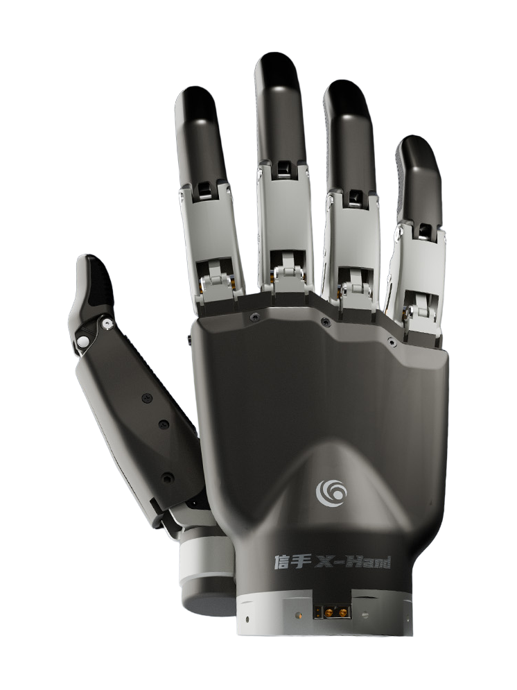
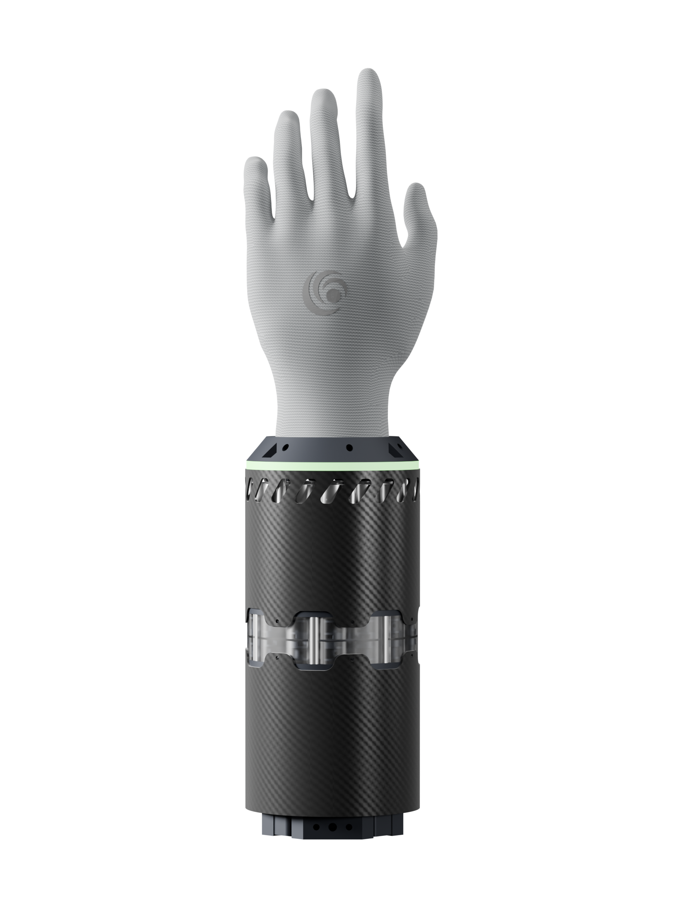
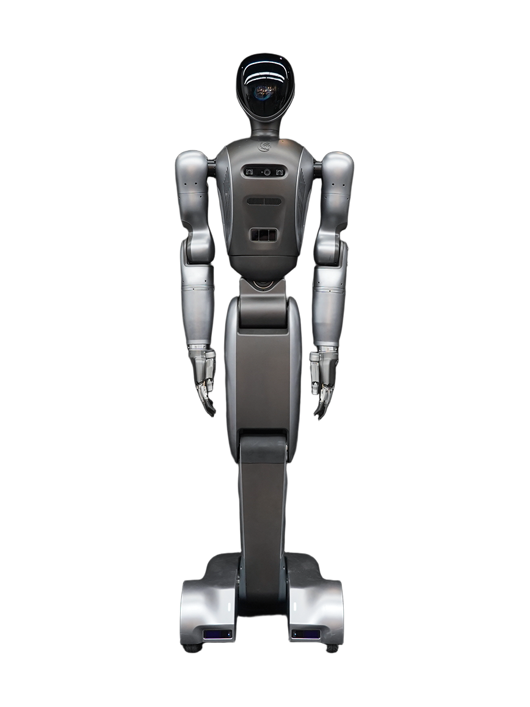
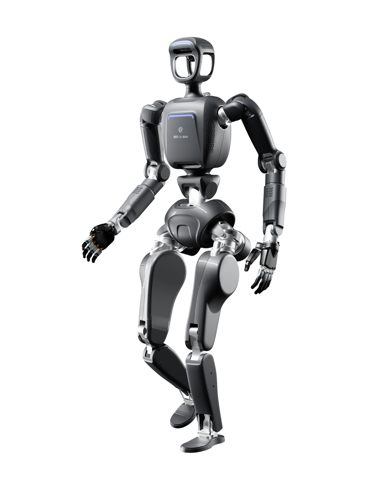

X-Hand M1
A robot hand from China, announced 2025.
Sources retrieved: 9 November 2026 (B, E, F) · 10 November 2026 (A, C, D)
- Applications
- Intended use, per the manufacturer
- a rigid dexterous hand for standardized industrial scenarios, focusing on high-intensity assembly line operations in factoriesSource and note: Intended use, per the manufacturerF eu.36kr.com/en/p/3899174356387718 · Retrieved 9 November 2026
- Indicative price
- Not stated

Product render from the manufacturer's own website (yqbionics.com).
Specifications
11 of 18 stated 7 not stated
7 fields hidden
How to read the figuresShow guideClose
- not statedNo source
- noyesStated by a source
- 0Reported as zero
- ASource
- A*Source with a caveat (select it)
- CERecords only what the manufacturer states regarding CE marking.
Select a source marker for source details and notes.
The hand3/4 disclosed
Performance3/4 disclosed
Physical2/2 disclosed
Sensing and autonomy3/3 disclosed
Commercial0/1 disclosed
Compliance & certifications0/4 disclosed
Against the field
Each strip holds every robot of this type in the guide that states the figure, one bar per group of values. Further right means a larger figure, not a better robot. A taller bar means more robots in that group.
Fingertip force
30N
38 robot hands state a fingertip force
4 state a higher figure, 19 a lower one. 2 more state exactly the same figure. 12 state only a bound (≥ or ≤) and are not ranked. DG-5F-M lies beyond the end of the axis and is drawn at its edge as an open bar.
Lifting capacity
40kg88.2lbOur conversion from 40 kg. The manufacturer does not state an imperial figure itself, so the conversion has no source of its own.
48 robot hands state a lifting capacity
2 state a higher figure, 37 a lower one. 1 more states exactly the same figure. 7 state only a bound (≥ or ≤) and are not ranked.
Weight
630g1.39lbOur conversion from 630 g. The manufacturer does not state an imperial figure itself, so the conversion has no source of its own.
59 robot hands state a weight
32 state a higher figure, 21 a lower one. 1 more states exactly the same figure. 4 state only a bound (≥ or ≤) and are not ranked. Log scale: each step along the axis multiplies the value.
Active degrees of freedom
11DoF
66 robot hands state degrees of freedom
39 state a higher figure, 26 a lower one.
Notes
A Leaderobot article dated 11 August 2025 reports that Yue Quan Bionics had launched the X-Hand M1 together with the Y-Hand M1, the X-Bot and the W-Bot.
The press describes the X-Hand M1 as a rigid dexterous hand with the size and segment proportions of a human hand and a palm built on the transverse and longitudinal arches of a human palm.
Sources
One line per source, not per figure: a source has one retrieval date.
- Aimg.wanwang.xin/pubsf/10369/10369357/cdn-static-pages/pages/pc/1895821_zh-cn.html.Body.js?version=20260827101725Main source. Retrieved 10 November 2026
- Bleaderobot.com/news/6048Secondary. Retrieved 9 November 2026
- Cgithub.com/yuequanbionics/devices_pkgSecondary. Retrieved 10 November 2026
- Draw.githubusercontent.com/yuequanbionics/YQ_SDK/main/DOC/XHand-SDK-%E4%BD%BF%E7%94%A8%E8%AF%B4%E6%98%8E.pdfSecondary. Retrieved 10 November 2026
- Ecls.cn/detail/2143854Secondary. Retrieved 9 November 2026
- Feu.36kr.com/en/p/3899174356387718Secondary. Retrieved 9 November 2026
More robots
Same manufacturer

Y-Hand M2Yue Quan Bionics

W-BotYue Quan BionicsHumanoid

X-BotYue Quan BionicsHumanoid
All robots from Yue Quan Bionics